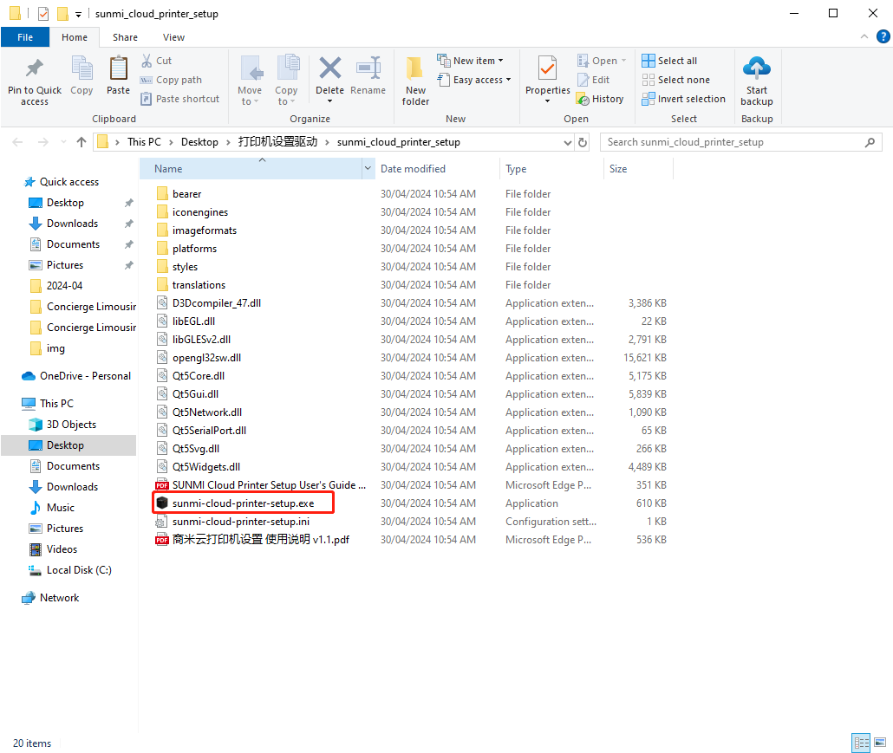

Sunmi Cloud Printer IP修改
2024年11月13日 · Charlie
请注意：此打印机只能在Windows上设置
Sunmi 驱动下载链接打开 Sunmi-cloud-printer-setup
出现提示 点击 More Info
点击 Run Anyway
将打印机通过自带的USB Type C的线连接到电脑主机，并点击软件上的连接
需要同意 Allow
看到打印机的信息后，就说明连接成功
网线口的IP地址 —> IP地址需要先确定是否是可以使用的，检查方法
ping 192.168.1.xxx
子网掩码 255.255.255.0
修改完成后，点击保存即可
WiFi连接并设置IP地址 —> 需要先连接店内WiFi
(P.S. 一定要输入正确的WiFi名)
固定WiFi IP，检查可用IP地址方法同上，点击保存
并打印测试页检查IP是否设置成功
Q.如果这台打印机无法打印简体中文怎么办？ 去到 打印设置 —> UTF-8 改成 否 —> 并选择 GB18030 —> 然后保存
打印自检页 —> 双击后面按键 如图